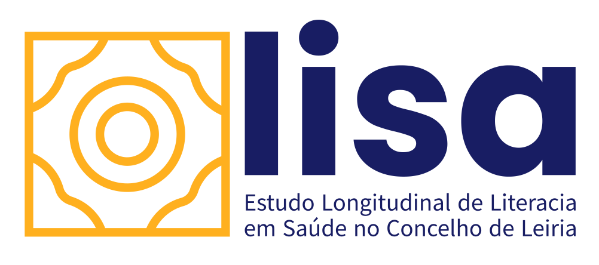

+351 969 376 402
lisa-leiria@cm-leiria.pt
Entidades Organizadoras

saber ser saúde
fase 1
Contactos
Saber Ser Saúde
O Estudo Lisa
(1)
Tem como principal objetivo medir a literacia em saúde(2) na população adulta residente no concelho de Leria ao longo dos próximos 10 anos. É um estudo essencial, de base populacional que permitirá a análise dos dados em saúde numa amostra representativa da população do concelho de Leiria. Este estudo servirá para auxiliar na planificação de estratégias de organização de cuidados e políticas em saúde. A participação de todos é muito importante, pois só assim conseguiremos caracterizar a literacia em saúde do concelho de leiria, perceber as lacunas e melhorar os cuidados de saúde prestados a estas pessoas. (1) Este é um estudo de coorte que se designa por estudar e acompanhar uma amostra da população por um determinado intervalo de tempo. (2) A literacia em saúde consiste no grau de conhecimento que se tem em saúde.
Importância do estudoNos últimos anos, vários estudos têm demonstrado que um nível inadequado de literacia em saúde pode ter implicações na saúde dos cidadãos, na utilização dos serviços de saúde e, consequentemente, nos gastos em saúde. Portugal é o país onde foi registado a maior percentagem de nível “suficiente” de literacia em saúde: 65%. E onde 7,5% das pessoas foram classificadas com um nível “inadequado” e 22% pessoas foram classificadas com um nível “problemático”.
Por estas razões, é urgente realizar um estudo para caracterizar a literacia em saúde do concelho de Leiria, de forma a adequar as melhores práticas e organização de cuidados e políticas em saúde.
Tipologia de estudoÉ um estudo colaborativo multidisciplinar que junta diferentes entidades do concelho de Leiria. O estudo Lisa é promovido por:
ciTechCare – Centro de Inovação em Tecnologias e Cuidados de Saúde do Politécnico de Leiria
Câmara Municipal de Leiria
ACES Pinhal Litoral
Lida - Laboratório de Investigação em Design e Artes.
Quem vai participarTodos a população com mais de 17 anos residente no concelho de Leiria poderá participar no estudo. Os dados vão ser recolhidos pessoalmente através de entrevistas pessoais assistidas por computador. A amostra* será representativa por escalão etário e sexo. * Os participantes
Perguntas frequentesO que é o estudo Lisa?
É um estudo cujo objetivo é medir a literacia em saúde na população adulta residente no concelho de Leria ao longo dos próximos 10 anos. Este estudo é promovido pelo ciTechCare – Centro de Inovação em Tecnologias e Cuidados de Saúde do Politécnico de Leiria em parceria com a Câmara Municipal de Leiria, a ACES Pinhal Litoral e o Lida - Laboratório de Investigação em Design e Artes.
O que é literacia em saúde?
A OMS, a organização Mundial de Saúde (DGS, 2019) define Literacia em Saúde como “o grau em que os indivíduos têm a capacidade de obter, processar e entender as informações básicas de saúde para utilizarem os serviços e tomarem decisões adequadas de saúde”, sabendo-se que esta contribui não só para promoção da saúde e prevenção da doença, mas também para contribuir para a eficácia e eficiência dos serviços de saúde.
Porque é importante realizar um estudo em Literacia em Saúde?
Portugal é o país onde foi registado a maior percentagem de nível “suficiente” de literacia em saúde: 65%. E onde 7,5% das pessoas foram classificadas com um nível “inadequado” e 22% pessoas foram classificadas com um nível “problemático”. Por estas razões, é urgente realizar um estudo para caracterizar a literacia em saúde do concelho de Leiria, de forma a adequar as melhores práticas e organização de cuidados e políticas em saúde.
Quais são os riscos associados à minha participação no estudo Lisa?
Não há riscos em participar no estudo Lisa. (adicionar texto sobre a identidade e os dados do participante estarem protegidos)
Quem autorizou a realização do estudo Lisa?
O estudo Lisa foi construído de modo a cumprir as boas práticas clínicas e o Regulamento Geral de Proteção de Dados (RGPS). Adicionalmente, este estudo foi aprovado pela Comissão de Ética(1) do Politécnico de Leiria.
(1) https://www.ipleiria.pt/investigar/investigar/comissao-de-etica/